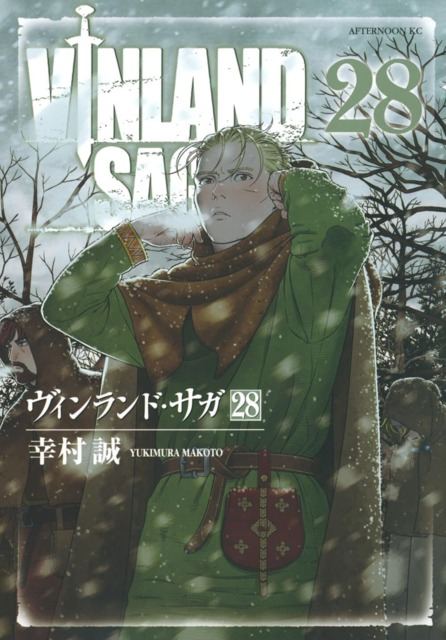

Vinland Saga (Japanese: ヴィンランド・サガ, Hepburn: Vinrando Saga) is a Japanese historical manga series written and illustrated by Makoto Yukimura.
Vinland Saga (Japanese: ヴィンランド・サガ, Hepburn: Vinrando Saga) is a Japanese historical manga series written and illustrated by Makoto Yukimura.
The series is published by Kodansha, and was first serialized in the boys-targeted manga magazine Weekly Shōnen Magazine before moving to Monthly Afternoon, aimed at young adult men.
As of June 2024, its chapters have been collected in 28 tankōbon volumes.
Vinland Saga has been licensed for English-language publication by Kodansha USA.
The story is a dramatization of the story of Thorfinn Karlsefni and his expedition to find Vinland, with the majority of the story covering his fictional counterpart's transition from a bloodthirsty, revenge-filled teenager into a pacifistic young man; juxtaposed against this is the rise to power of King Canute, the journey of his own counterpart directly contrasting with that of Thorfinn's.
Inspired by the King of Norway Olaf Tryggvason, Yukimura decided to write Vinland Saga as a story about slavery.
Yukimura's editor was against the original idea of Thorfinn being a slave; so the character was changed to that of a Viking.
The author agreed, as he wanted Thorfinn to come to understand the tragedy he causes as a Viking in later parts of the narrative.
Yukimura's sensation during the Cold War and the September 11 attacks was projected on Thorfinn's character, who is traumatized by his actions as a warrior and thus decides to find Vinland in order to establish a place where people from different races are able to live together peacefully.
By August 2022, Vinland Saga had over 7 million copies in circulation.
The series won the Grand Prize of the 13th Japan Media Arts Festival in 2009 and the 36th Kodansha Manga Award for Best General Manga in 2012.
A 24-episode anime television series adaptation, animated by Wit Studio, aired from July to December 2019.
A second season, animated by MAPPA, aired from January to June 2023.
The manga has been critically acclaimed with praise given to the story, art, characters, themes, and setting.

Makoto Yukimura, the creator of Vinland Saga, crafted the story with the intention of conveying that violence does not lead to a positive outcome.
Central to this message is the character of Thorfinn, who evolves from a vengeful and reckless teenager into a mature and introspective person.
Yukimura's goal was for Thorfinn's development to reflect the author's own aspirations for growth.
One of the earliest concepts for Thorfinn was that of a slave who faces numerous hardships while striving to achieve his goal, echoing the historical story of King Olaf Tryggvason.
Though Tryggvason regained his throne after being enslaved, Yukimura wanted Thorfinn to experience deeper struggles, including learning about oppression and human suffering.
Thorfinn, unlike many typical heroes, was designed without extraordinary physical abilities, instead gaining strength from his lived experiences and emotional growth.
Although Thorfinn’s appearance changes over the course of the series, Yukimura placed great emphasis on the character's psychological evolution.
Initially, the character was envisioned as a slave, but due to editorial feedback, Thorfinn's role was adjusted to that of a Viking.
This change allowed Yukimura to explore themes of violence, fate, and personal tragedy, impacting Thorfinn throughout the narrative.
The story's focus on human pain, destiny, and the consequences of violent choices set Vinland Saga apart from other works.
Yukimura began the serialization of Vinland Saga in April 2005 in Kodansha's Weekly Shōnen Magazine but quickly switched to Monthly Afternoon in December of the same year due to the challenges of maintaining a weekly production schedule.
He drew inspiration for the manga’s illustrations and battle scenes from works like Battle Angel Alita by Yukito Kishiro, whom Yukimura admires as one of the best manga artists.
The workload for Vinland Saga is intense, with Yukimura working long hours, sometimes up to 18 hours a day, assisted by a small team of assistants.
He strives to produce 30 pages per chapter, submitting one page a day to his publisher.
When Yukimura first started, he estimated that the series would take around 10 years to finish, but he later revised this estimate to 14 years as the scope of the story expanded.
Initially planned to be divided into four-volume parts, the story eventually grew to span more than 22 volumes.
Yukimura also faced difficulties with the series' pacing and direction, often uncertain when he could finally introduce the long-awaited Vinland arc.
In response to the challenges posed by the COVID-19 pandemic, Yukimura transitioned to digital tools for creating the manga, although he still uses traditional inking methods before scanning and digitizing the artwork.
Vinland Saga is structured into four major arcs: the "War" arc, the "Slave" arc, the "Eastern Expedition" arc, and a final arc that Yukimura has stated will be the longest of all, taking several years to complete and spanning over 1,000 pages.
As of November 2019, Yukimura announced that the manga had entered its final arc, which is expected to be over 50 chapters long.